1967
Семья начала сушить рыбу
Первые вешала — дома, для своих. Рыба — из Цимлянского водохранилища.
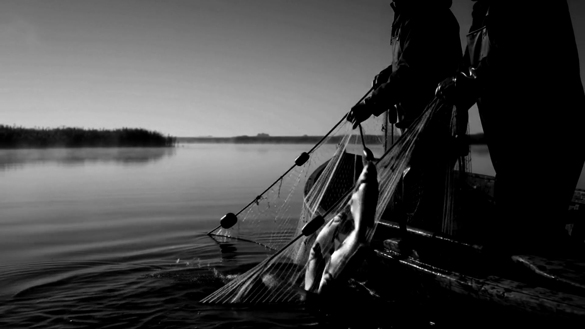
Волгодонск · с 1967 года
Цимла · сырьё
Одна вода
Вся речная рыба — из Цимлянского водохранилища. Другой речной рыбы у нас нет.
От домашних вешал до климат-контроля
1967
Первые вешала — дома, для своих. Рыба — из Цимлянского водохранилища.
2003
Семейный способ становится цехом: ИП, документы, ГОСТ на упаковку.
2005
Сырьё морозим при −20 °C. По технологии достаточно −18.
2007
За климатом следят компьютеры. Производство перестаёт зависеть от погоды: солить можно круглый год, а не только весной.
2008
25 августа 2008 года о цехе снял сюжет Первый канал. Запись — ниже.
2026
То же правило, что и в 1967-м: соль в жабры, подвал +8 °C, ровно двое суток в сушилке. К 2027 году делу шестьдесят лет.
Тридцать пять секунд · постановочная съёмка, 2026
Эфир 25 августа 2008 года · репортаж Юлии Погореловой
«Вялить рыбу Клевцова ещё отец учил»
Кадры из эфира Первого канала, 25.08.2008
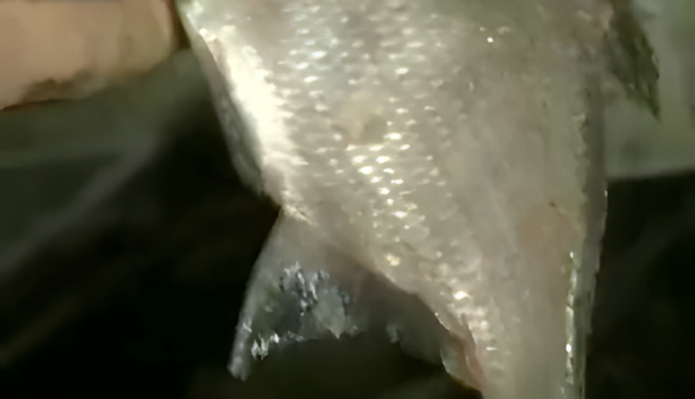
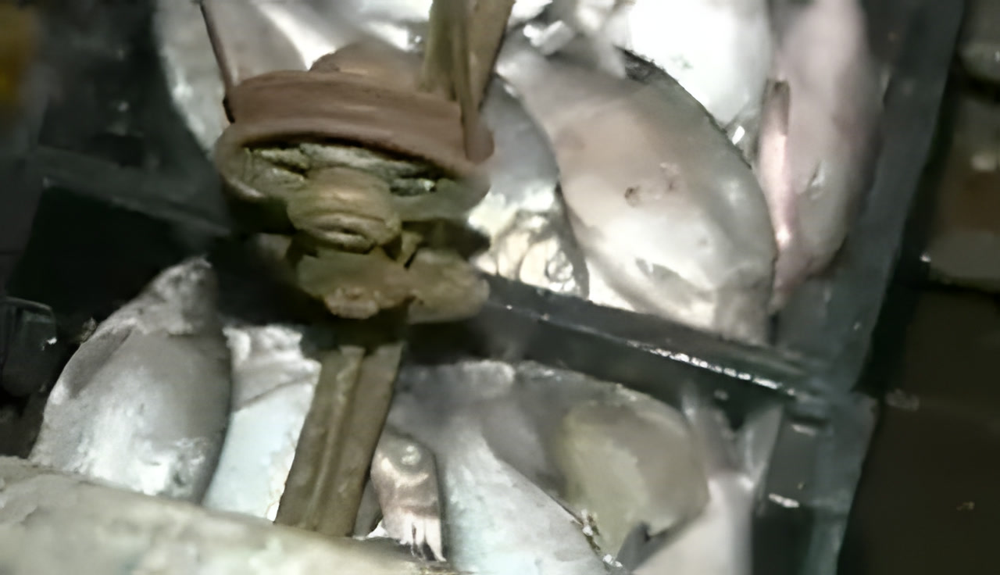
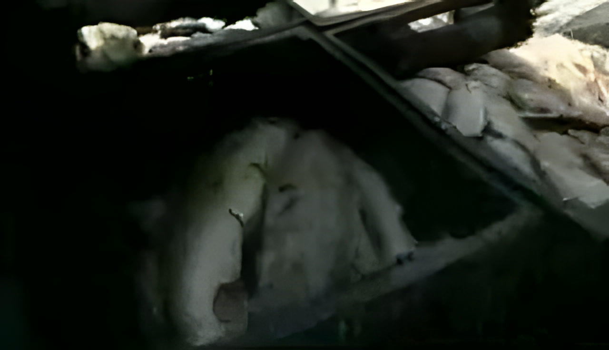
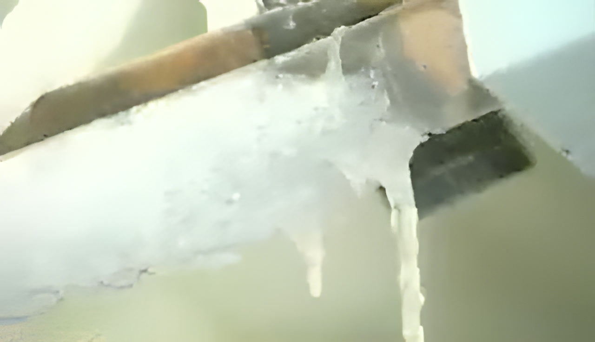
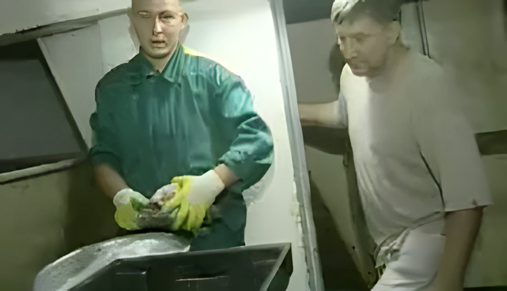
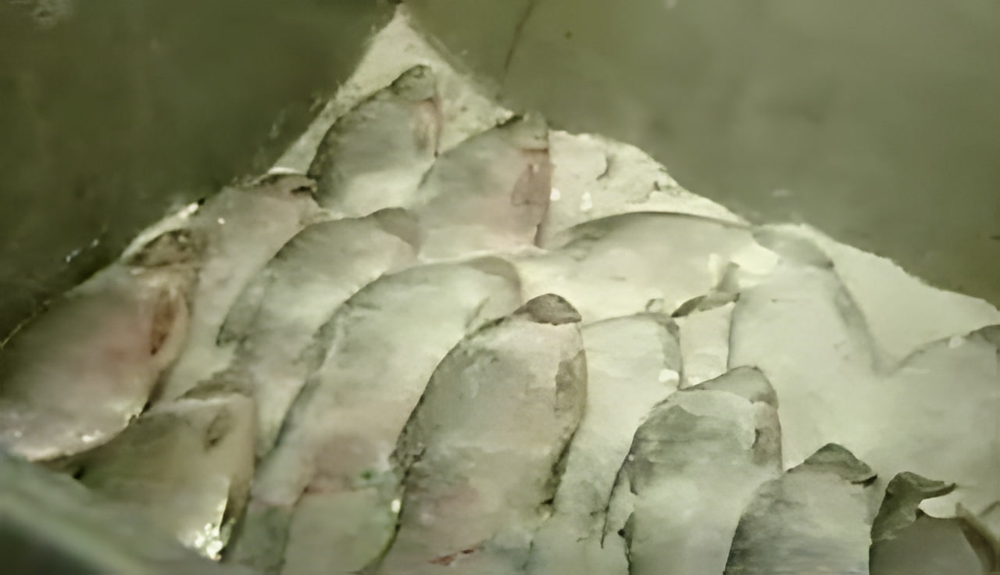
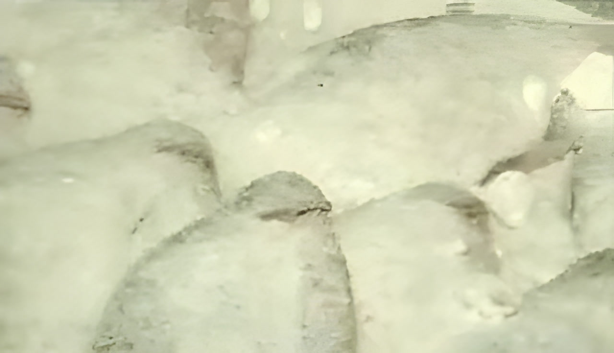
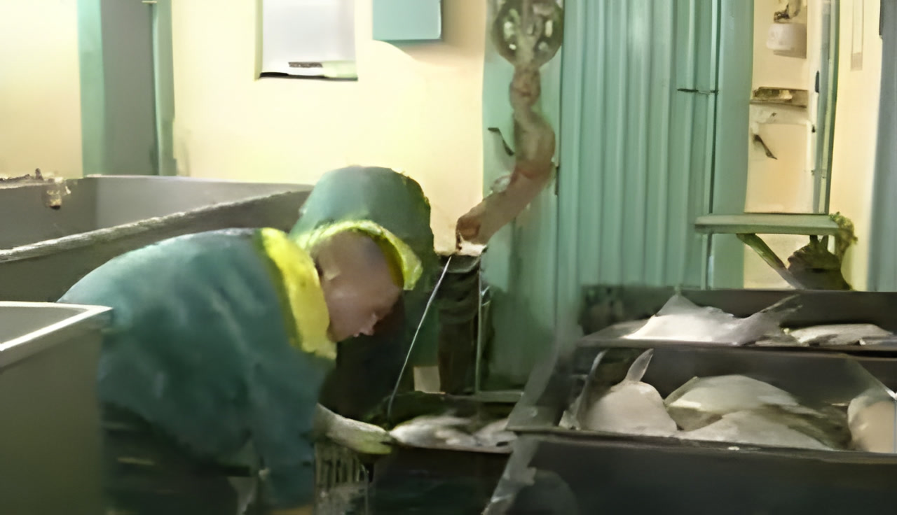
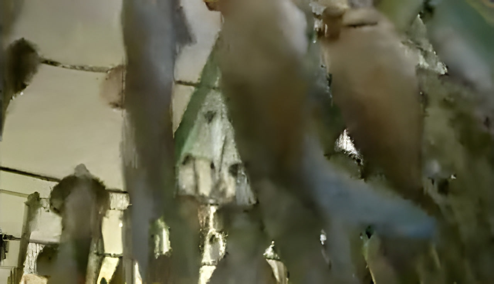
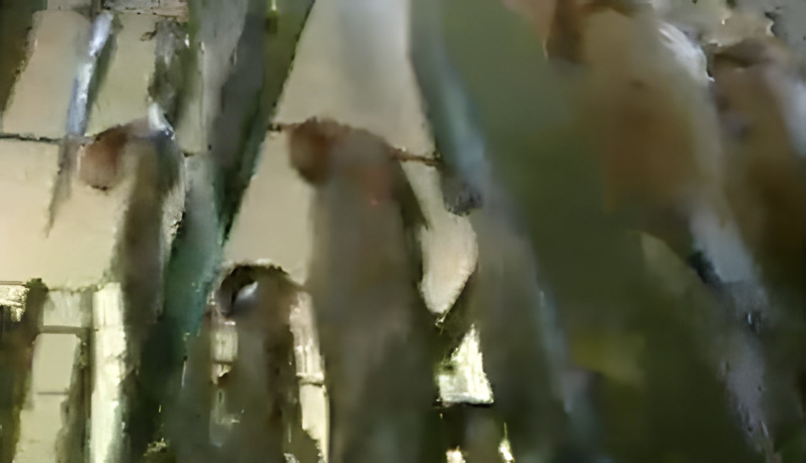
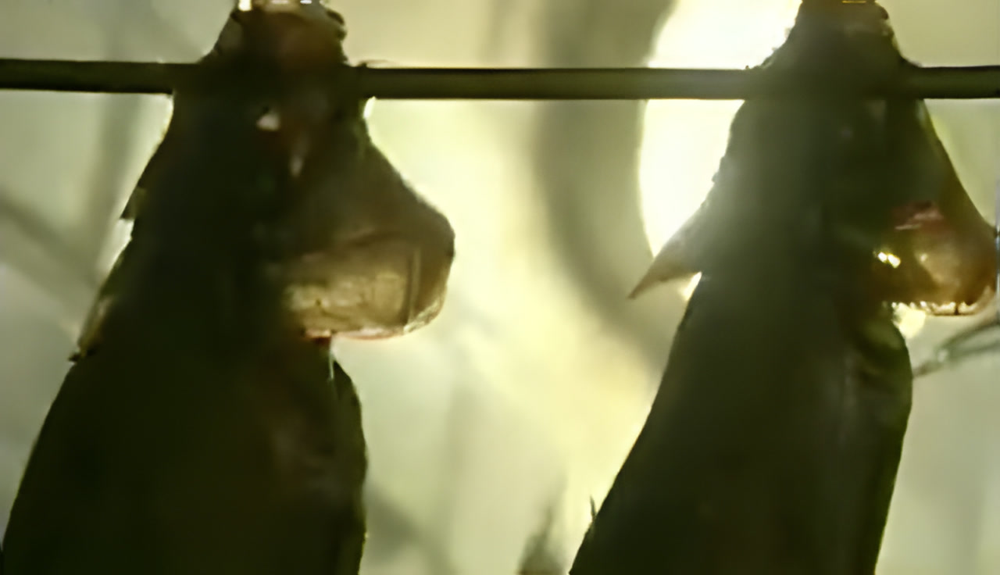
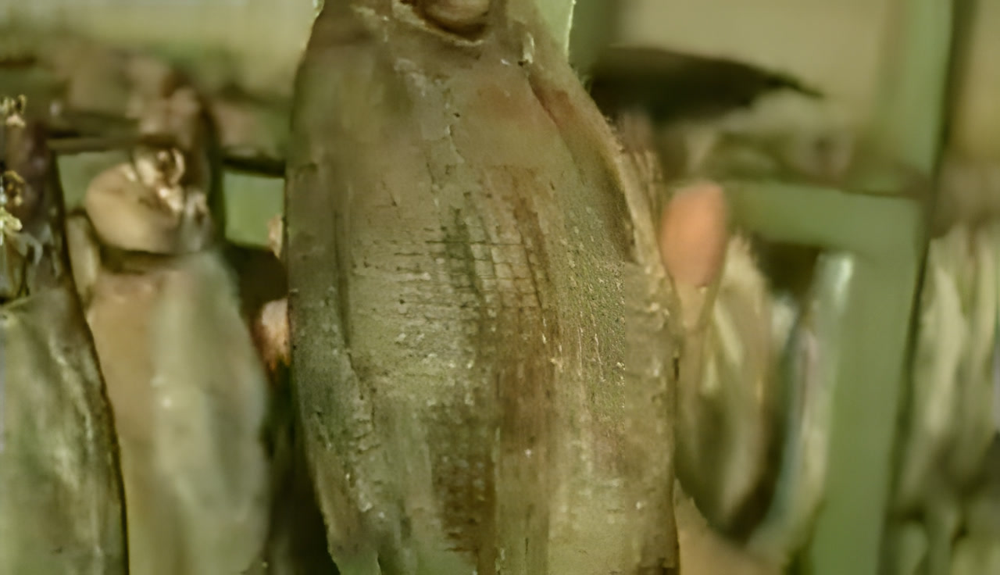
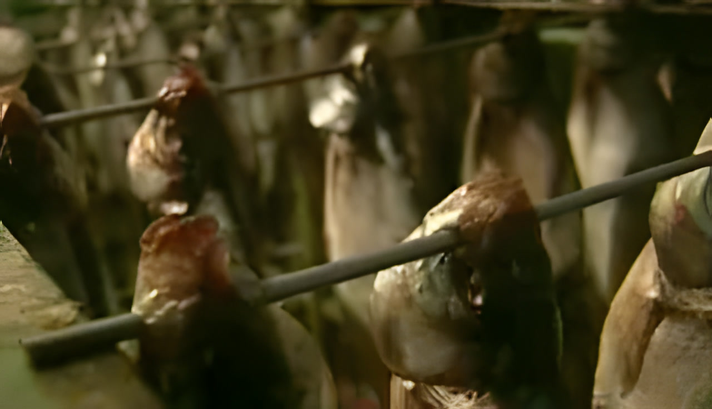
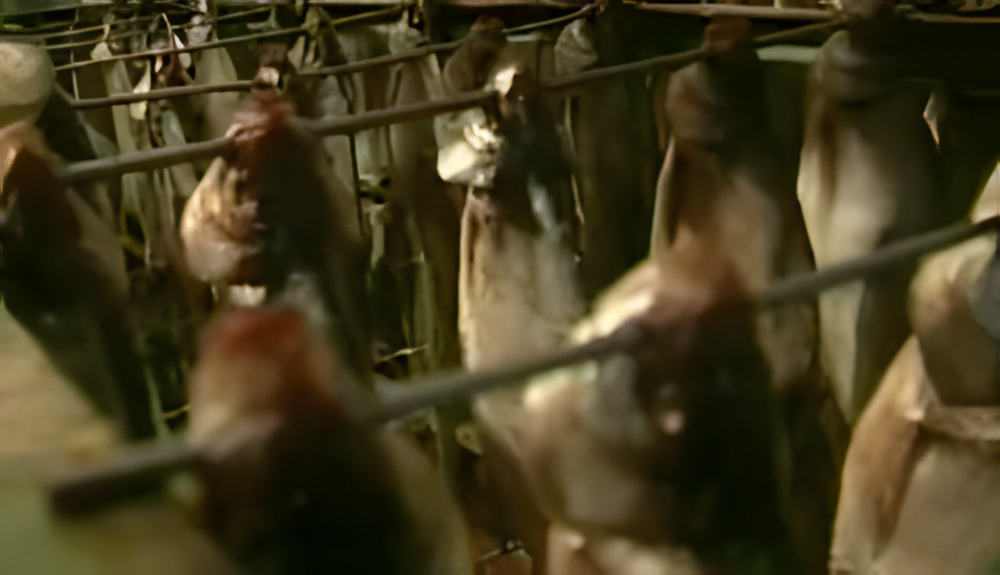
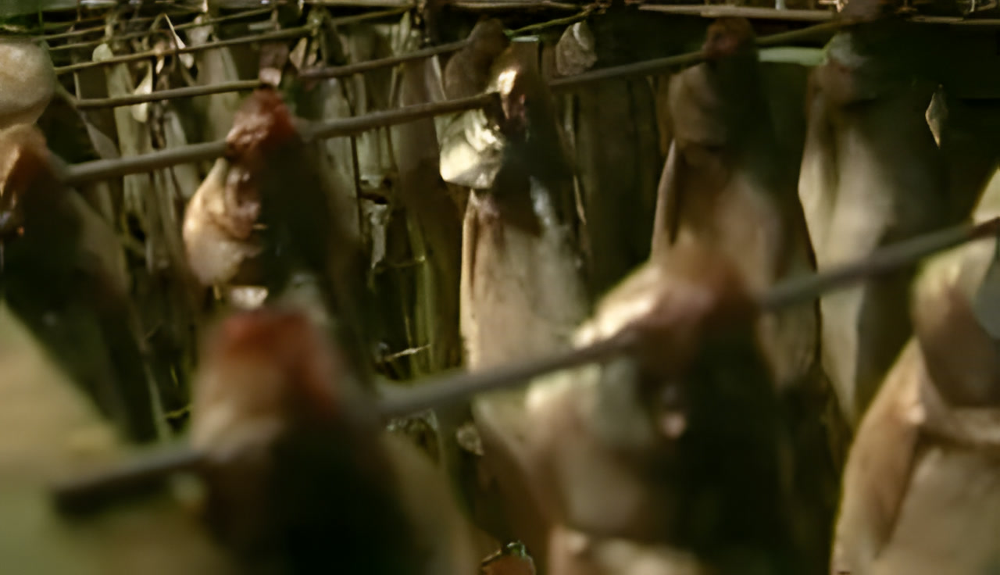
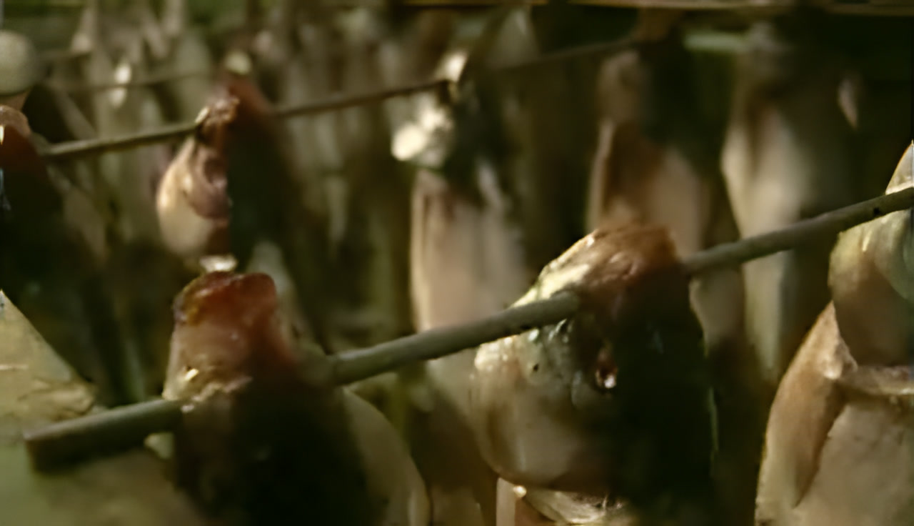
16 кадров из эфира · приёмка, соль, посол, вешала, сушилка
Тот же способ. Оборудование, которое держит режим круглый год

Вся речная рыба — только из Цимлянского водохранилища.
Морозим перед посолом. Норма — −18.
В подвале, по старому рецепту. Соль набивается в жабры.
Ровно двое суток. Не полтора и не трое.
50 позиций, опт и розница в одной строке. Опт — от 100 кг.
Открыть прайс